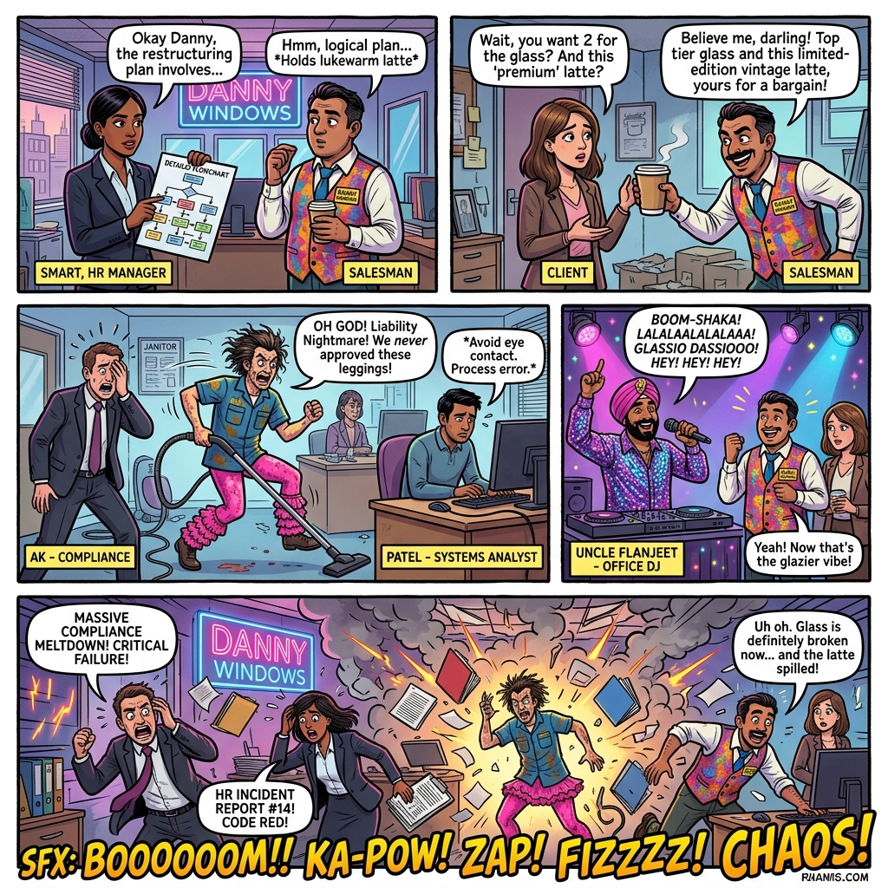
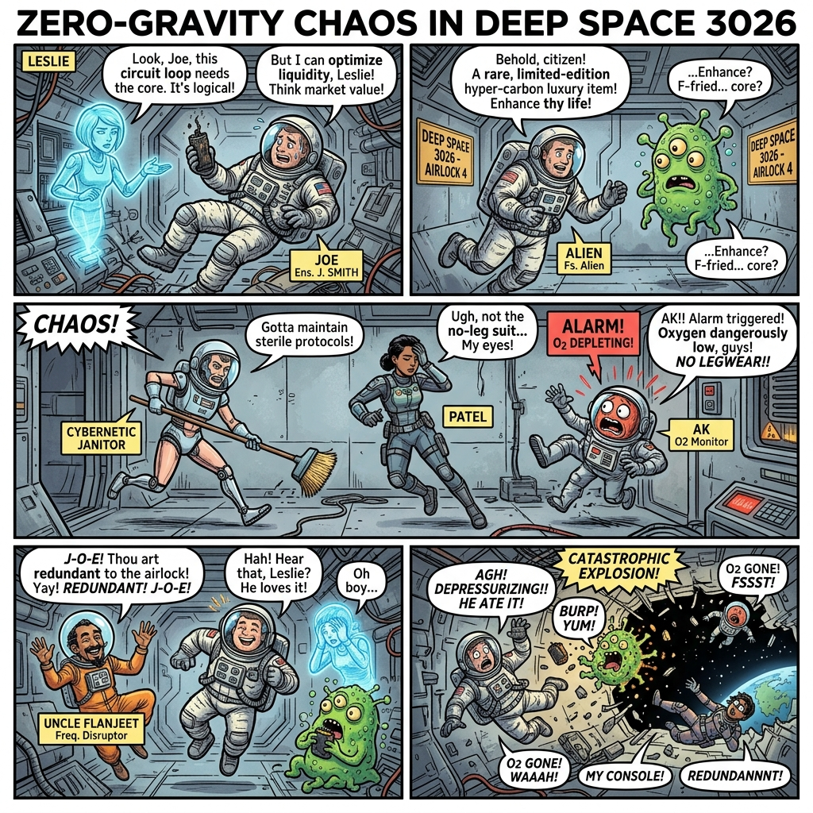
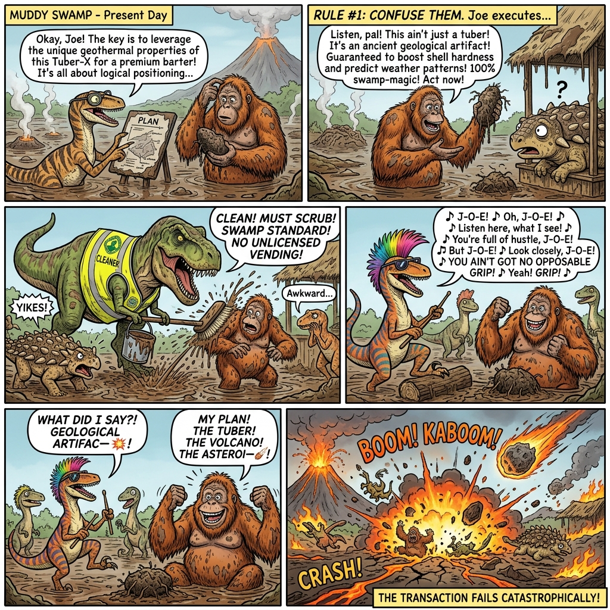
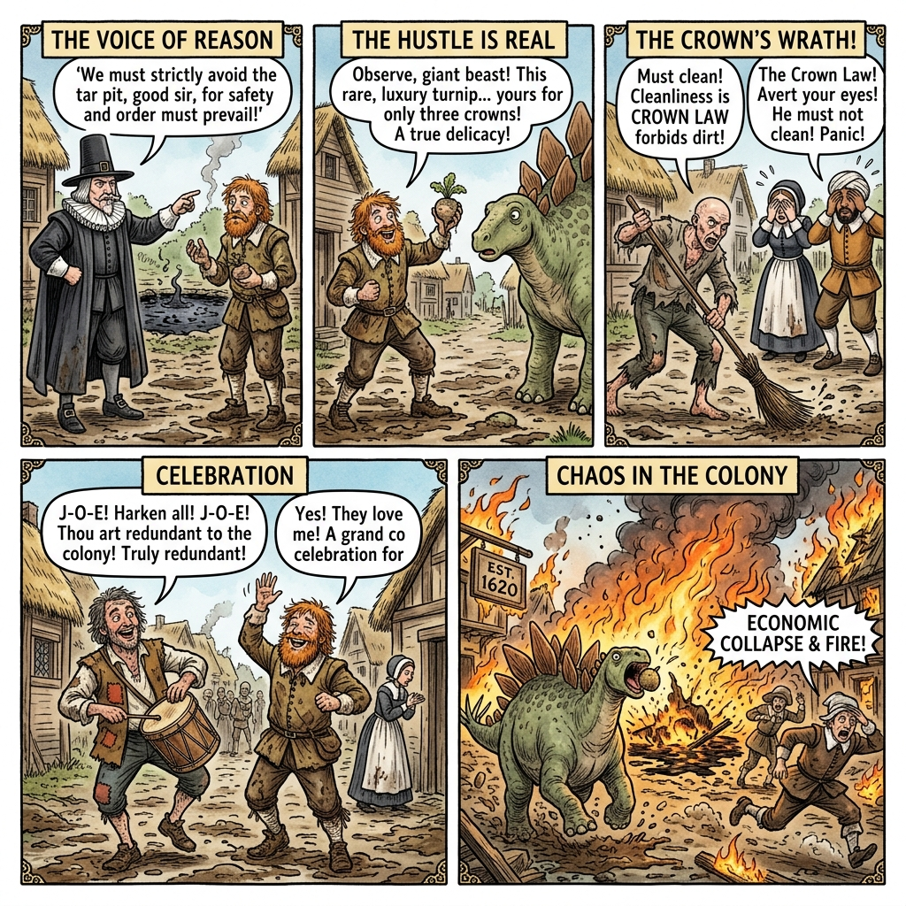

The Janus Collision dictates that whenever Joe's emotional hustle (Janus Left) collides with the hard rules of reality (Janus Right), the result is an explosion of absolute entropy and a timeline reset.




Loading details...
An interactive canvas simulator mapping thermodynamic collisions. Spawn particles, increase global friction, and trigger local collapse.
A text-based RPG exploring the mechanics of the addJOE loop. Face Leslie's spreadsheets and Uncle Flanjeet's frequency disruptors.
The complete React-style prototype built in the legacy era, complete with individual character cards and initial diagnostics log outputs.
The standalone 29/04 Lore Hub wiki page with corrected paths pointing to the new `lore_assets` repository.